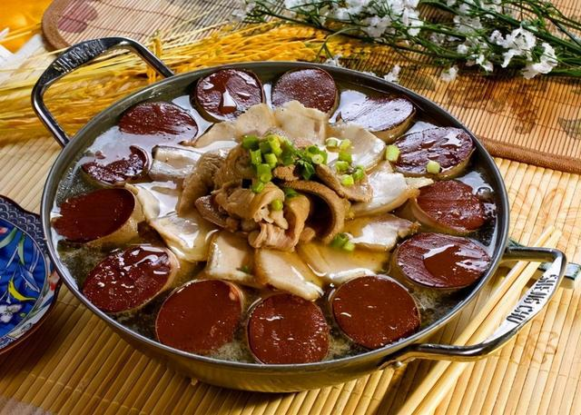
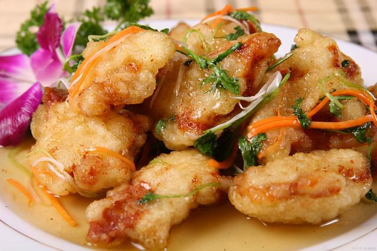
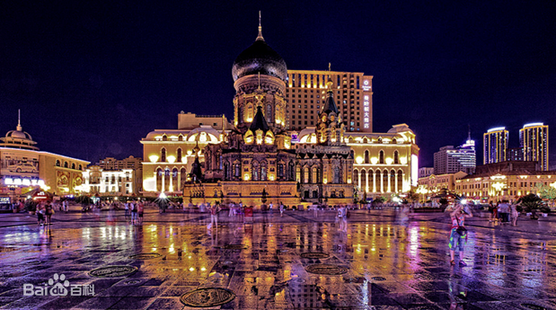

特色美食

俄罗斯大列巴

东北杀猪菜
哈尔滨红肠
铁锅炖大鹅

锅包肉
当前页面：我的家乡
哈尔滨位处中国东北地区，黑龙江省西南部，是第一条欧亚大陆桥和空中走廊的重要国际性综合交通枢纽。 哈尔滨是国家历史文化名城，是“一国两朝”即金、清两代王朝发祥地，金朝第一座都城就坐落于阿城。 哈尔滨也是国际著名的冰雪文化和冰雪旅游城市，素有“东方莫斯科”和“东方小巴黎”之称，市内建筑中西合璧，1998年被评选为首批中国优秀旅游城市。。 哈尔滨更是全国文明城市、国际湿地城市、东亚文化之都和中国十佳冰雪旅游城市，被联合国授予“音乐之城”称号。 哈尔滨市地域辽阔，自然资源丰富，其土地面积达53076.4万平方千米，截至2021年，哈尔滨市下辖9个市辖区、7个县，代管2个县级市。

冰雪大世界，是哈尔滨一张耀眼的“名片”。 哈尔滨冰雪大世界创办于1999年，是由哈尔滨市政府为迎接千年庆典神州世纪游活动建造的规模空前的超大型冰雪艺术精品工程，是世界上最大的室外以冰雪为主题的超大型娱乐工程。 每年的12月份，松花江水封冻结实，工人师傅们开采冰块，历经半个月的时间进行雕塑。15天左右时间，15万立方米冰雪，聚冰成塔，“造梦师”一刀一铲手工打磨，用智慧和巧思，建成上百个冰雪景观，为游客打造了一座梦幻之城。 复合冰材料让冰雪结构不断延展，LED点光源晕染出炫丽“冰花”，创意造型赋予冰雪建筑现代审美……一系列新材料、新技术、新理念为冰雪大世界增添迷人光彩。
索菲亚教堂，全称圣·索菲亚教堂，是沙俄时代西伯利亚第四步兵师的随军教堂。“圣·索菲亚”教堂是由俄国建筑师克亚西科夫主持设计的具有“拜占庭”风格的建筑。教堂具有浓郁的异国情调，成为哈尔滨市一道独具特色的风景线，是沙俄入侵东北的历史见证和重要遗迹。1996年经国务院批准，“圣·索菲亚”教堂被列为第四批全国重点文物保护单位。1997年，“圣·索菲亚”教堂更名为“哈尔滨市建筑艺术馆”后，常设展览为《哈尔滨老照片展》。此展陈列了大量的珍贵历史图片、影像和实物，生动展现了哈尔滨在百余年的时光中，从一个小渔村逐步成为享有"东方莫斯科"、"东方小巴黎"美誉的国际大都市的发展过程。人们在这里可以看到许多哈尔滨的老照片，感受这座城市遥远的从前。
中央大街始建于1898年，全街建有欧式及仿欧式建筑71栋，并汇集了文艺复兴、巴洛克、折衷主义及现代多种风格市级保护建筑13栋。1997年6月1日成为全国第一条商业步行街。2005年中央大街被建设部评为“中国人居环境范例奖”。2008年3月东方小巴黎-哈尔滨中央大街被联合国授予“联合国建筑成就奖”，同时，哈尔滨中央大街被国家授予“建筑艺术博物馆”称号。2009年，中央大街被评为首批中国历史文化名街。 走到中央大街的尽头就是松花江，那里有一座纪念碑格外显眼，它就是防洪纪念塔。这座纪念碑是在1958年修建，为了纪念哈尔滨战胜了当年的松花江特大洪水而建造的。